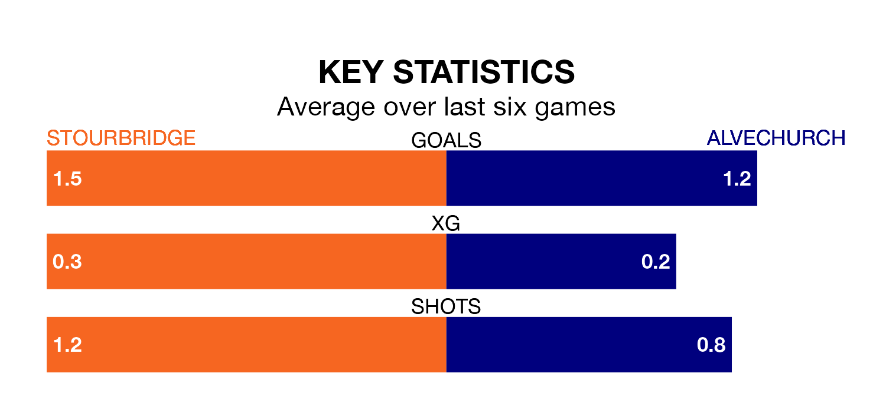

Struggling Alvechurch face Stourbridge away on Tuesday looking to build on a win in their last league outing.
After securing all three points with a 2-1 victory over Hitchin Town on Saturday, Alvechurch sit 19th in Southern League Premier Central.
They travel to play a Stourbridge side 16th in the standings, who also won their last match, 2-1 against Kettering Town, on January 13.
In the last 10 years, Stourbridge and Alvechurch have played each other on 10 occasions. Stourbridge won two of them, Alvechurch five, and they drew three times.
On average, Stourbridge scored 0.9 goals and Alvechurch 1.6 in those matches.
Their last meeting was on March 6, when Alvechurch won 2-0 away.
With 31 goals in 24 games so far this season, Alvechurch are scoring at below the league average rate with 1.3 goals per game. And they are conceding more than average, letting in 45 goals at a rate of 1.9 per game.
Stourbridge, meanwhile, are above average scorers, with 1.6 goals per game, compared to a league average of 1.5. They have conceded 1.4 goals per game.
The hosts are in disappointing form in Southern League Premier Central, with two wins and four losses from their last six games.
With two wins and a draw over that period, the away team's form is slightly better – they have taken seven points from 18, compared to Stourbridge's six.
Updated: 09:18 (UTC), 23/01/24